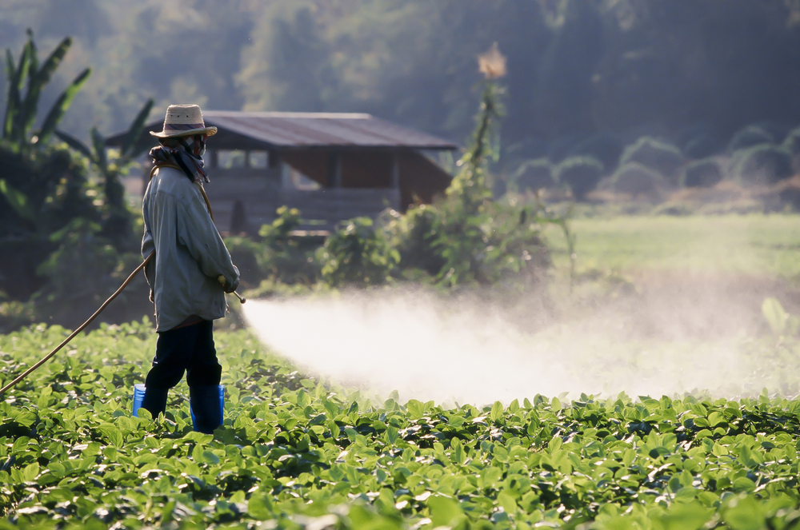
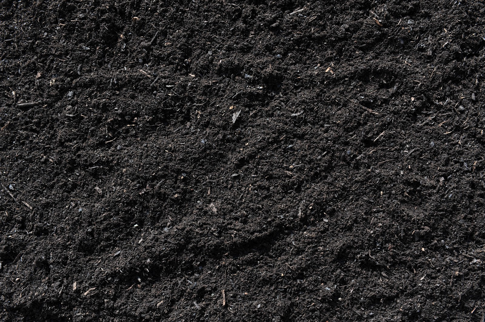
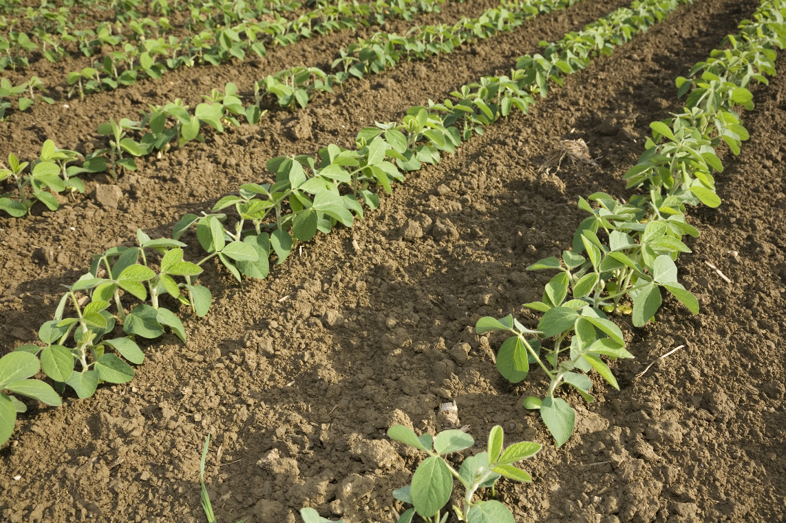
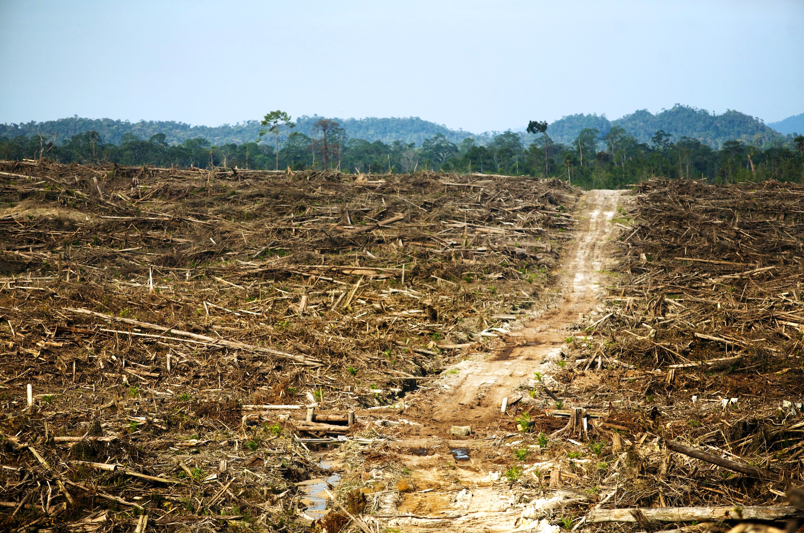

Pesticide Use

A recent breakthrough in farming techniques has been to develop genetically-modified crops that are resistant to pesticides and other chemicals. Bioengineers have successfully created strains of soybean that are resistant to certain agents (a common example is glyphosate-resistant soybeans). These strains allow farmers to use these chemicals - like glyphosate - freely. These toxins then seep into the soil, are carried off by groundwater, and also remain as residues on the plant itself. For some crops, the latter isn’t a problem to most of us consumers who wash what they buy. Soy and corn, however, are widely used in the US as animal feed to sustain our supply of beef and other meats. According to GRACE Communications Foundation, the pesticide residues can be carried into livestock’s fatty tissues and milk, which we then consume.
According to the United States Environmental Protection Agency, soy production has even promoted unnecessarily heavy use of chemical agents. In a report released in October of 2014, they established that “prior to the arrival of the invasive soybean aphid, historically lower soybean prices probably resulted in few instances where insecticide usage on soybeans would have been economically justifiable.” However, since the spread of this pest, insecticide use has grown. In 2004, the legalization of neonicotoid-class pesticides was meant to allow farmers to target aphids and other major pests. However, results show these pesticides are actually ineffective, yet since their legalization, soybean pesticide use has increased from 430,000lbs/yr to 3.9million lbs/yr (a 900% increase).
According to the United States Environmental Protection Agency, soy production has even promoted unnecessarily heavy use of chemical agents. In a report released in October of 2014, they established that “prior to the arrival of the invasive soybean aphid, historically lower soybean prices probably resulted in few instances where insecticide usage on soybeans would have been economically justifiable.” However, since the spread of this pest, insecticide use has grown. In 2004, the legalization of neonicotoid-class pesticides was meant to allow farmers to target aphids and other major pests. However, results show these pesticides are actually ineffective, yet since their legalization, soybean pesticide use has increased from 430,000lbs/yr to 3.9million lbs/yr (a 900% increase).
Though the aphids suffer no ill effects, that’s not true for all animals in contact with these agents. Researchers and activists argue that these pesticides have adverse effects on other key members of ecosystems, bees in particular. Recent studies showed that “guttation droplets produced by plants grown from neonicotinoid treated seed were shown to have from 10–100 mg/L of the pesticides and were found to cause paralysis and eventual death when fed to honey bees.” While this research has been published, and many farmers agree that neonicotinoids are little to no use against pests, chemical use is still abundant. This is only one example of unnecessary toxin use.
We can see how widespread use of chemicals can have serious impacts in our own health, as well as the health of our environment.
We can see how widespread use of chemicals can have serious impacts in our own health, as well as the health of our environment.
Water Contamination
Water contamination is a concern for all soy production in the United States. Soybean fields follow the mass-production model, meaning that they tend to operate on a massive scale. These typically contain streams and other forms of running water running through them, which inadvertently collect runoff from these fields. Pesticides, herbicides, fertilizers, and other chemical agents used spill into the streams, unless the farm utilizes a buffer system. Without a grass strip or other kind of vegetative buffer, farm runoff contains significant amounts of harmful chemicals that then spill out into the environment through these natural streams. Fertilizer and pesticide runoff in particular has long been a concern for agriculture, especially since these agents are usually composed of toxic nitrogen- and phosphorous-containing molecules.
This kind of freshwater contamination is a real problem. Iowa and Minnesota have experienced many complaints over cases of agro-caused water pollution. Some water treatment plants in Iowa have even sued upstream farms for the poor water quality of the streams they purify. They took legal action because even though they filter water by profession, clearing out these certain chemicals is surprisingly expensive. Research suggests that these filtration plants spend up to $4000 a day to extract these chemicals alone. A far greater example of overwhelmingly costly water contamination is where these chemicals ultimately end up. As polluted rivers merge and dump out into the sea, our oceans are also experiencing the negatives of our chemical agents. One of these polluted ocean areas is the “dead zone” of the Gulf of Mexico. A huge body of “hypoxic” water, it presents conditions unfavorable to living organisms due to the high concentration of deadly chemicals used in farming upstream around the Mississippi River and its tributaries. Scientists say this dead zone has reached an area of 6,400 square miles. Its size classifies it as the world’s second largest dead zone.
This kind of freshwater contamination is a real problem. Iowa and Minnesota have experienced many complaints over cases of agro-caused water pollution. Some water treatment plants in Iowa have even sued upstream farms for the poor water quality of the streams they purify. They took legal action because even though they filter water by profession, clearing out these certain chemicals is surprisingly expensive. Research suggests that these filtration plants spend up to $4000 a day to extract these chemicals alone. A far greater example of overwhelmingly costly water contamination is where these chemicals ultimately end up. As polluted rivers merge and dump out into the sea, our oceans are also experiencing the negatives of our chemical agents. One of these polluted ocean areas is the “dead zone” of the Gulf of Mexico. A huge body of “hypoxic” water, it presents conditions unfavorable to living organisms due to the high concentration of deadly chemicals used in farming upstream around the Mississippi River and its tributaries. Scientists say this dead zone has reached an area of 6,400 square miles. Its size classifies it as the world’s second largest dead zone.

The solution is prevention. According to the Environmental Working Group, measures to establish buffers around soy fields have been put in place to lower the chance of these harmful substances to actually reach these streams into freshwater. Organic buffer zones that thrive during the winter that can pick up the runoff chemicals and prevent toxins from getting into the water. This natural filter also retains sediment, thereby preventing erosion, and create environments for wildlife. Though this practice decreases a farm’s total farmable acreage, many state governments have established incentives for implementing these buffer zones. Another idea is to simply find a different farming style that decreases the need for chemical use. Crop rotation is a popular alternative.
Soil Quality

American farming techniques rely heavily on monocultures. Like any other monoculture crop, soybean farming can have adverse effects on the farmland. Continual production of soy contributes to soil depletion, which has to be addressed by adding synthetic fertilizers or reworking the soil. While this isn’t a major problem for the soil itself, this method of farming creates the larger problem of manufacturing synthetic fertilizers (typically petroleum based), and delivery of the fertilizers to the farm (via fossil-fuel consuming transportation), distributing the product across the field (with tractors). We can see how this system relies heavily on the consumption of fossil fuels, a current major problem. Research shows that monoculture soil quality is lower than soil used for crop rotation. What’s more, monocultures have far less defense from pests, unlike the natural defenses of a field using crop rotation. Many researchers have argued that more natural farming methods - employing crop rotation, use of natural fertilizers such as compost or letting other crops grow and die on the field, and employment of other eco-friendly practices increase soil quality, biodiversity, and defense against unwanted organisms.
Against the odds, US farmers have made headway in using soybeans’ positives to fight consequences of typical industrial farming. Farmers have worked hard to decrease their energy use, their greenhouse gas emissions, and irrigation water use (both per hectare and per metric ton of soy produced). As Laura Foell, Iowa soybean farmer and United Soy Board director, says, “We’re no-tillers, so we don’t disturb the residue on the ground. In the spring, we plant into the residue. By not disturbing the residue, we have increased the soil moisture, increased the organic matter, and even increased the wildlife microbes and earthworms that live in the soil.” One of the key benefits that farmers have latched to is soy’s ability to compact erosion-prone soil.
Against the odds, US farmers have made headway in using soybeans’ positives to fight consequences of typical industrial farming. Farmers have worked hard to decrease their energy use, their greenhouse gas emissions, and irrigation water use (both per hectare and per metric ton of soy produced). As Laura Foell, Iowa soybean farmer and United Soy Board director, says, “We’re no-tillers, so we don’t disturb the residue on the ground. In the spring, we plant into the residue. By not disturbing the residue, we have increased the soil moisture, increased the organic matter, and even increased the wildlife microbes and earthworms that live in the soil.” One of the key benefits that farmers have latched to is soy’s ability to compact erosion-prone soil.
Soil Erosion
Soybean production causes soil compaction (the compression of dirt particles). As such, soybean farming has been used on poor soil prone to erosion. Erosion is due to many things, including excessive tilling and soil depletion. Though there are many negatives to genetically-modified soy, herbicide resistant strains allow farmers to use highly-erodible soil without tilling, quickening this strain’s ability to aid the soil. Soybean-induced soil compaction doesn’t exactly restore the soil, but it can slow down/halt erosion.
Indeed, increased production of soybeans, and refining of agricultural techniques has shown effects on American soil erosion. Between 1980 and 2013, Soy yield increased by 53% and soil erosion per metric ton has decreased by 65%. Per hectare, erosion has decreased 41% (USSEC Sustainability Report). Other benefits of compaction include decreased frost damage to crops, and lesser water seepage.
Indeed, increased production of soybeans, and refining of agricultural techniques has shown effects on American soil erosion. Between 1980 and 2013, Soy yield increased by 53% and soil erosion per metric ton has decreased by 65%. Per hectare, erosion has decreased 41% (USSEC Sustainability Report). Other benefits of compaction include decreased frost damage to crops, and lesser water seepage.

Global Soy

In 2007, Routledge published an article in Environment Magazine about the effects of Soy production on a global level (The Ripple Effect: Biofuels, Food Security and the Environment). An important point expressed in the article is how US soybean and maize production have driven prices up in the global market. High demand causes a respective high supply, and we’ve seen this through the decades. Demand for these products are still very high despite the ultra-production of these crops in America and other nations. It’s a lucrative business, and it wouldn’t be surprising to see other nations join in on this supply chain. However, this leads to a spread of problems linked to soy production, like the environmental issues we’ve discussed. For example, ecologists are looking at South America in high hopes that mass-production of soy won’t spread there. While unregulated deforestation isn’t a significant problem in North America, we know that key rainforests in South America are consistently at risk of clear-cutting. If soybean production takes off in the Amazon and other southern locations, the rate of rainforest clear-cutting will undoubtedly increase. This transformation will intensify problems of decreased global biodiversity, increased atmospheric greenhouse gases, and widespread chemical waste, all of which are global problems.
DID YOU KNOW?
Soy-based products use far less water than their animal-based counterparts.
1L of soymilk uses only 28% as much water as it takes to make 1L of cow milk!
1lb of soy-burger only requires 7% as much water as it takes to make 1lb of beef patty!
1L of soymilk uses only 28% as much water as it takes to make 1L of cow milk!
1lb of soy-burger only requires 7% as much water as it takes to make 1lb of beef patty!
http://www.takepart.com/article/2015/02/03/ag-runoff-drinking-water-pollution-solution
http://www.noaanews.noaa.gov/stories2015/080415-gulf-of-mexico-dead-zone-above-average.html
http://wwf.panda.org/what_we_do/footprint/agriculture/soy/impacts/soil_erosion/
www.multiquip.com
http://wwf.panda.org/what_we_do/footprint/agriculture/soy/
http://wwf.panda.org/what_we_do/footprint/agriculture/soy/impacts/
https://en.wikipedia.org/wiki/Deforestation_in_the_United_States
http://ussec.org/wp-content/uploads/2012/09/13-USSEC-0147_Annual-Report-10-23-13.pdf
http://www.epa.gov/sites/production/files/2014-10/documents/benefits_of_neonicotinoid_seed_treatments_to_soybean_production_2.pdf
http://journals.plos.org/plosone/article?id=10.1371/journal.pone.0029268#s3
http://www.takepart.com/article/2014/10/16/epa-pesticide-linked-bee-deaths-doesnt-protect-soybean-crops
http://www.takepart.com/article/2014/06/24/are-neonicotinoids-new-ddt-bees-and-other-wildlife
http://www.tandfonline.com/doi/pdf/10.3200/ENVT.49.9.30-43
http://www.mda.state.mn.us/protecting/conservation/practices/buffergrass.aspx
http://www.ars.usda.gov/sp2UserFiles/Place/50701000/cswq-0007-154368.pdf
http://waterfootprint.org/media/downloads/Ercin-et-al-2012-WaterFootprintSoy.pdf
https://en.wikipedia.org/wiki/Buffer_strip
http://deltafarmpress.com/management/buffer-zones-common-sense-conservation
http://www.sustainabletable.org/263/pesticides
http://www.noaanews.noaa.gov/stories2015/080415-gulf-of-mexico-dead-zone-above-average.html
http://wwf.panda.org/what_we_do/footprint/agriculture/soy/impacts/soil_erosion/
www.multiquip.com
http://wwf.panda.org/what_we_do/footprint/agriculture/soy/
http://wwf.panda.org/what_we_do/footprint/agriculture/soy/impacts/
https://en.wikipedia.org/wiki/Deforestation_in_the_United_States
http://ussec.org/wp-content/uploads/2012/09/13-USSEC-0147_Annual-Report-10-23-13.pdf
http://www.epa.gov/sites/production/files/2014-10/documents/benefits_of_neonicotinoid_seed_treatments_to_soybean_production_2.pdf
http://journals.plos.org/plosone/article?id=10.1371/journal.pone.0029268#s3
http://www.takepart.com/article/2014/10/16/epa-pesticide-linked-bee-deaths-doesnt-protect-soybean-crops
http://www.takepart.com/article/2014/06/24/are-neonicotinoids-new-ddt-bees-and-other-wildlife
http://www.tandfonline.com/doi/pdf/10.3200/ENVT.49.9.30-43
http://www.mda.state.mn.us/protecting/conservation/practices/buffergrass.aspx
http://www.ars.usda.gov/sp2UserFiles/Place/50701000/cswq-0007-154368.pdf
http://waterfootprint.org/media/downloads/Ercin-et-al-2012-WaterFootprintSoy.pdf
https://en.wikipedia.org/wiki/Buffer_strip
http://deltafarmpress.com/management/buffer-zones-common-sense-conservation
http://www.sustainabletable.org/263/pesticides